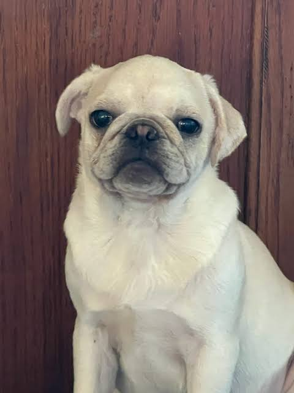
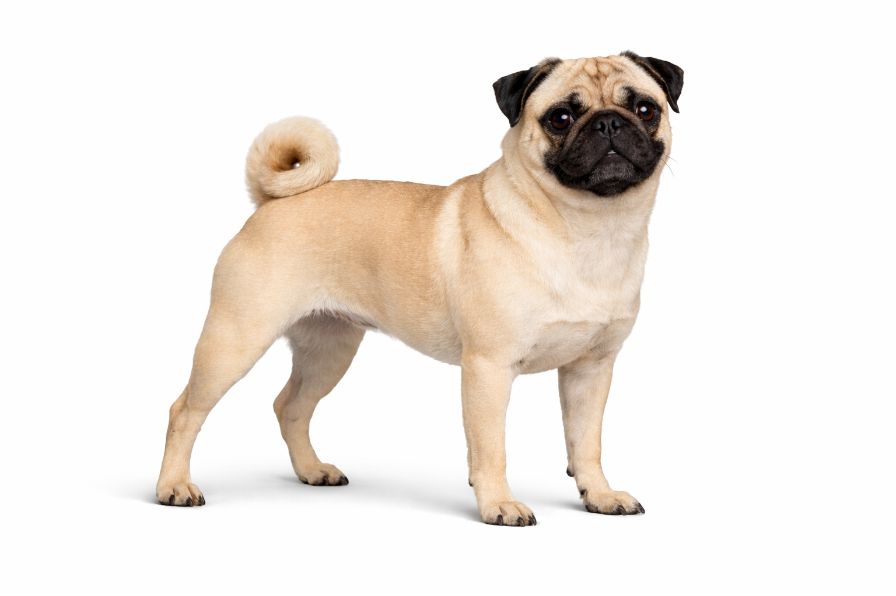
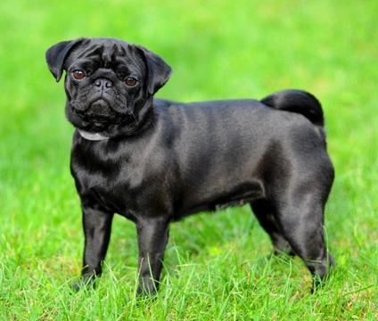

Have you ever looked at a pug and thought... "That looks like a potato with legs!"
Well you've come to the right place!



Name: Miss Lucky Poobody
Favorite food: EVERYTHING!
Special talent: Snoring louder than a tractor.
Which one is cuter
potatoes deserve more respect because they're so soft that if you yell at them it squishes their little potato hearts.
Stay squishy, my friends!